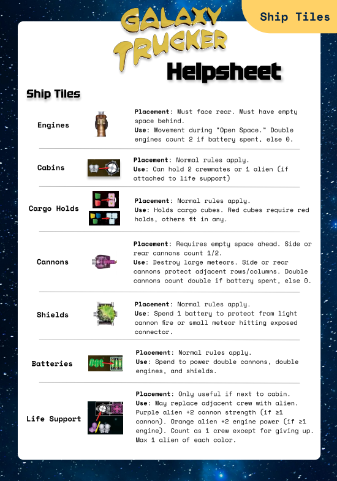
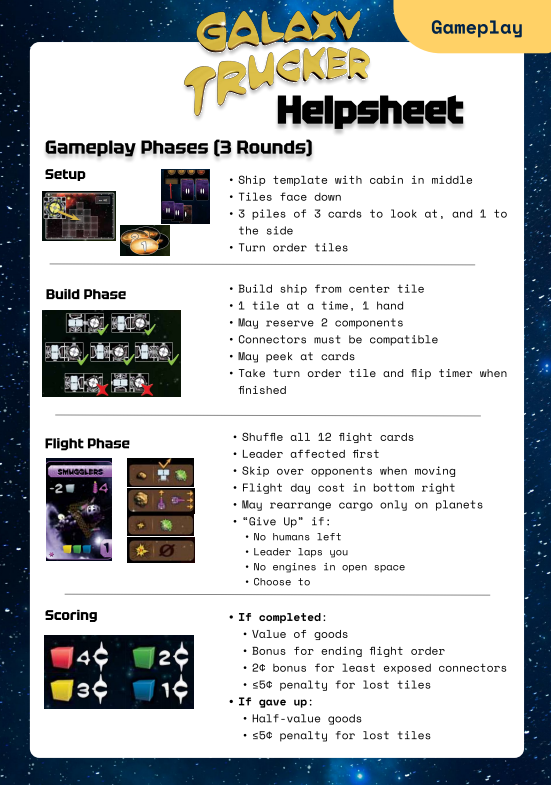

| Contents |
Galaxy Trucker Cheat Sheet  OverviewThis project was pursued as a group project for IE 5760, Human Factors in Product Design, taught by Prof. Michael Dorneich, to learn how to design usable instructions. We chose Galaxy Trucker because the group liked board games, and we recognized Galaxy Trucker as a game ripe for clarification when it comes to rules. The project entailed:
Project collaborators were Thomas Lenz, Visruta Aiyer, Isabelle Clement, Heeral Chumber, and Carleigh Mach. ResultsGalaxy Trucker Cheat Sheet pdfProject Report with Justification pdf |